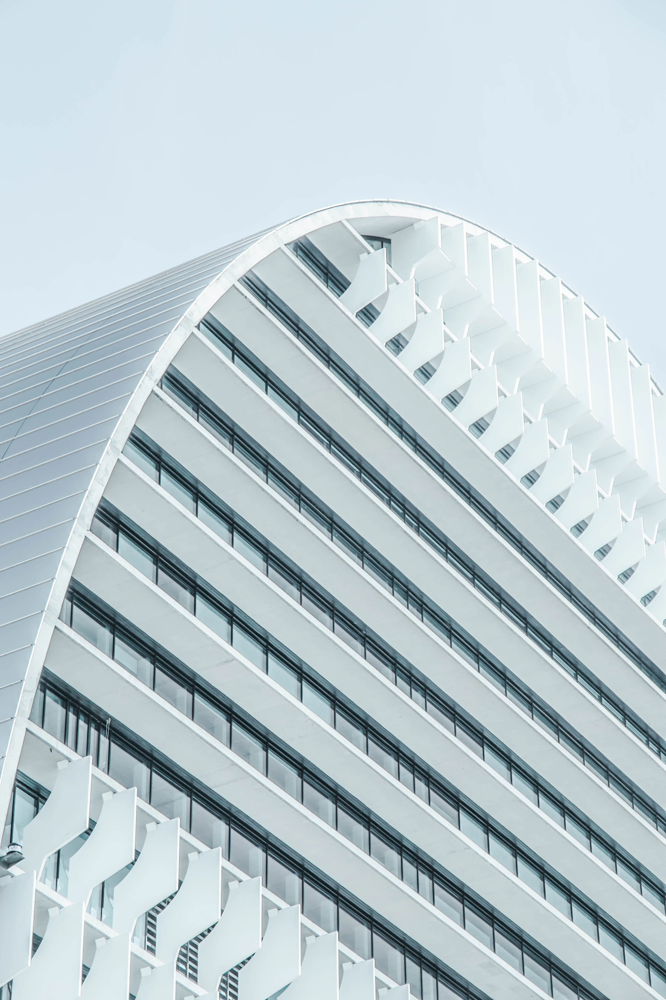
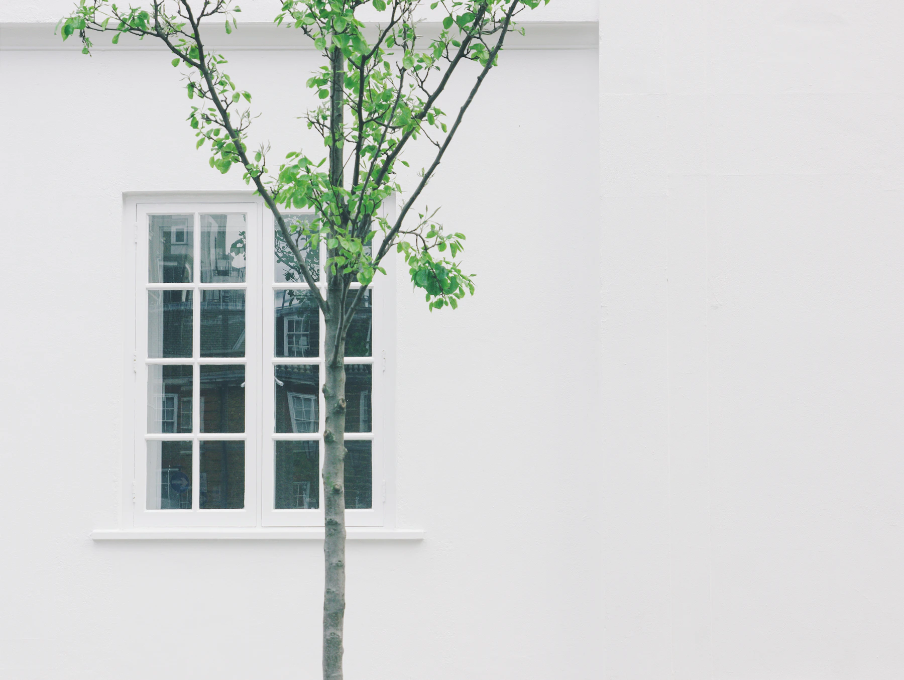
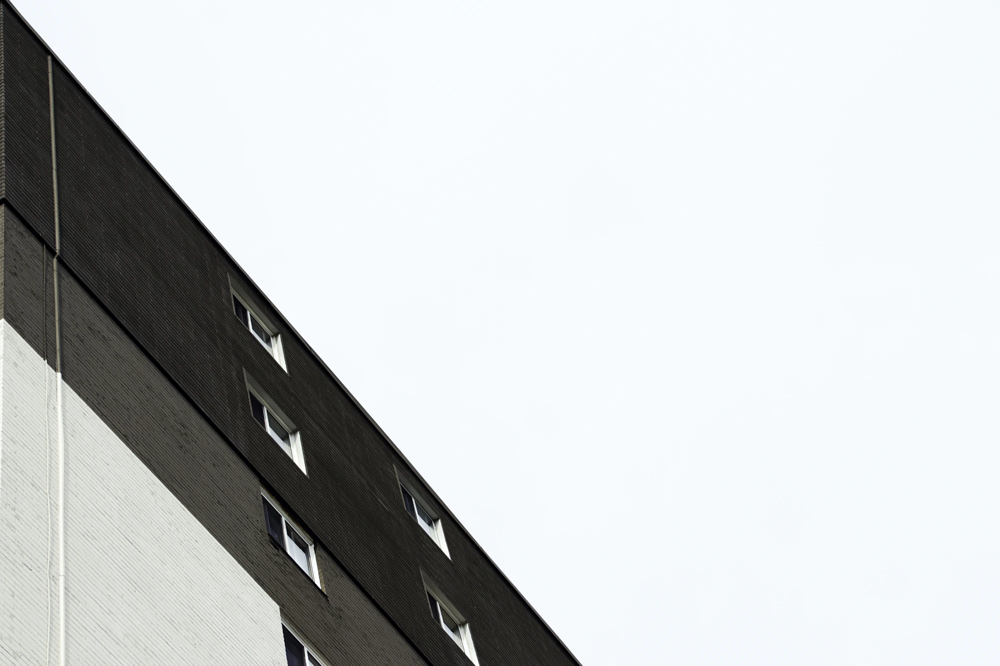

FIELD/FORM

A change of perspective.
SEE SPACE.
DIFFERENTLY.
Spaces for the way
we want to live.
01 / Selected studies
A change of perspective.01 — Living / Concept study
A softer
skyline.
An exploration of light, repetition and the space between. Imagining a more generous kind of urban living.
Drag to compare colour and monochrome. A visual study of the same photograph.
Light.Life.Room.
Light gives a space its shape.
Nature makes room for life.
Quiet lets us think.
Keep scrolling. A new perspective awaits.
Photo: Joel Filipe

Photo: Imani Bahati

Photo: RUBENIMAGES.
03 / Our perspective
Good spaces
start with a
better question.
What if a building made more room for life?
FIELD / FORM is an imagined independent studio with a simple point of view: design begins with people. How we meet, how we move, and what makes us feel at home.
These three fictional briefs explore that idea through light, landscape and the everyday. Each begins with a real architectural photograph, used as a point of reference.
Return to the studiesListen to
the place.
Make space
for people.
Let the
light in.
Your next chapter starts somewhere.
Make room
for an idea.
↗Like this direction? Let’s create a website for your business.